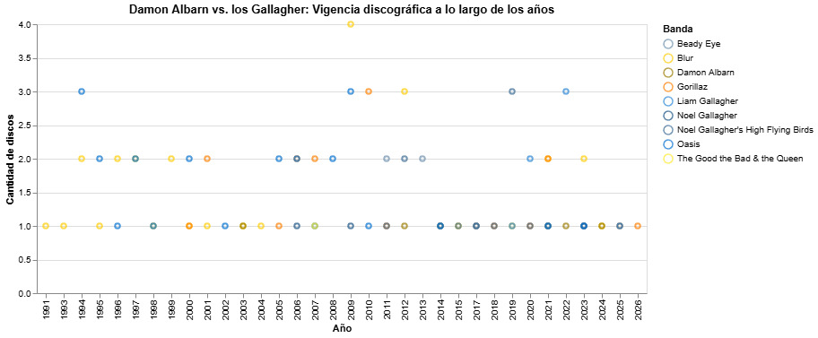

En octubre de 1995, los máximos representantes del pop británico se vieron las caras en el enfrentamiento mediático que marcó un antes y un después en sus carreras: la “Batalla del Britpop” entre Blur y Oasis. La respuesta del público dejó un claro ganador, situando a los hermanos Gallagher en la cúspide de la cultura musical durante gran parte de la década siguiente. Con éxitos como (What's the story?) Morning Glory y Definitely Maybe, Oasis parecía acomodarse en el trono, relegando a Blur a un segundo plano y proyectando su sombra sobre el grupo dirigido por Damon Albarn.
Sin embargo, los roces constantes entre las personalidades de Liam y Noel auguraban un quiebre, y entre períodos de distanciamiento y reuniones para seguir componiendo música, finalmente los Gallagher separaron sus caminos luego de una fuerte pelea en el 2009. Durante ese tiempo, Albarn no se había dejado estar, y en 2001 había dado a conocer uno de los proyectos musicales más importantes del nuevo siglo: la banda virtual Gorillaz.
El trabajo constante y en paralelo que realizó Albarn con Gorillaz y Blur, mientras los cabecillas de Oasis pasaban de pelea en pelea, rindió sus frutos a largo plazo. Hoy, más de 30 años después de la batalla que ganaron los hermanos de Manchester, la suma de los proyectos de Damon Albarn ha logrado dominar la industria musical manteniéndose vigentes con nuevos lanzamientos tan recientes como The Mountain y The Ballad of Darren.
Los datos no mienten. Mirando la discografía conjunta, tanto de Albarn como de los Gallagher, de los últimos 35 años, la verdadera victoria no fue del que gritó más fuerte por allá en los años noventa, sino que del que nunca dejó de producir.
Mediante un cuidadoso proceso de investigación, recopilamos los datos de cada disco que alguna vez lanzaron los hermanos Gallagher y Damon Albarn. Pero no nos limitamos solamente a Oasis y Blur, sino que dimos un paso más allá e incluimos todos los proyectos que han llevado el nombre de alguno de ellos. Así, logramos construir una base de datos que reúne la discografía completa de las dos bandas mencionadas, Gorillaz, Noel Gallagher’s High Flying Birds, Beady Eye, The Good the Bad & the Queen, y las incursiones en solitario de los líderes de estos proyectos.

Tal vez en respuesta a sus caracteres conflictivos, los Gallagher desarrollaron una gran variedad de proyectos musicales, con un total de cinco agrupaciones (contando a Oasis), que se han mantenido vigentes por 30 años, desde el lanzamiento de *Definitely Maybe* en 1994. En comparación, los cuatro proyectos que ha construido Damon Albarn pueden parecer pocos, pero la producción musical de estos cuenta una historia distinta.
Desde el lanzamiento de Leisure en 1991, Albarn ha logrado publicar un total de 64 discos físicos, de los cuales casi la mitad son álbumes de estudio. Y no solo eso, porque la evidencia muestra que los más recientes datan de 2023, en el caso de The Ballad of Darren (Blur) y su tour mundial homónimo, y 2026, en el caso de The Mountain (Gorillaz).
En contraste, en los últimos años Oasis no ha generado música nueva, pese a su reunión en 2025, y sólo se han mantenido activos los proyectos solitarios de sus líderes, con el lanzamiento esporádico de álbumes recopilatorios o demos olvidados de los años 90. Una realidad que está muy lejos del peak que vivieron entre 1994 y 1997.
Y hay algo todavía más revelador. En 2009, año que los Gallagher decidieron separarse porque ya no se soportaban, Blur lanzó al mercado cuatro discos, tres de los cuales eran grabaciones de shows en vivo que convocaron a miles de fanáticos. Y el año siguiente registra como el más productivo para Gorillaz, musicalmente hablando, con el lanzamiento exitoso de dos álbumes de estudio que han sido íconos de la banda, Plastic Beach y The Fall, y un disco que recolectó una década de singles.
Teniendo esto en la mira, cabe preguntarse: ¿Fue una coincidencia o fue que Damon decidió tomar las riendas de la industria al ver caer a su más grande rival?
Mientras los Gallagher se dividían en un grupo tras otro sin lograr volúmenes de venta ni de producción masivos, Albarn fortaleció sus mejores caballos de batalla, con una de sus décadas más productivas.
Nadie puede decir que los hermanos Gallagher no supieron jugar con su fama. Al día de hoy, siguen estando vigentes en el mundo mediático y han logrado penetrar profundamente en la cultura popular, con varios singles que alcanzaron el número uno y que se han convertido en himnos de las tres generaciones de jóvenes que siguieron a su formación.
Pero haber ganado el sprint no les aseguró el primer lugar en la maratón.
Más allá del enfrentamiento popular de la segunda mitad de los 90, el nombre de Damon Albarn mantuvo un perfil más bajo, pero nunca dejó de lado lo que mejor sabía hacer: la música. Sin romper el compromiso con ninguna de las dos bandas, Damon navegó junto a Gorillaz y a Blur por las décadas siguientes, rompiendo esquemas y diversificando sus estilos sin perder el norte.
Porque la vigencia en la industria musical, a largo plazo, no la sostuvo la actitud de estrella de rock ni la confrontación mediática, sino que lo hizo la reinvención, la constancia productiva y una ética de trabajo que terminó volcando la balanza a favor de Damon Albarn.